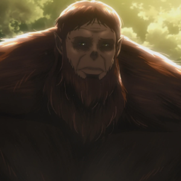

Зик Йегер
{kind=link}
Зик Йегер — человек, являющийся Звероподобным титаном и «генералом» отряда разумных титанов Марлии, что находится на Материке. Оттуда же родом Райнер, Бертольд и Энни.
Зик сын Гриши и Дины Йегеров и единокровный брат Эрена Йегера, внук Госпожи и Господина Йегер. а также член королевской семьи Фриц. Теоретически Зик может раскрыть полный потенциал Координаты, скрытой в Эрене, и использовать её в полную силу.
Внешность
Человек
В человеческой форме Зик высокий и хорошо сложенный мужчина с косматыми светлыми волосами, бородой и усами. Зачастую он не носит верхнюю часть одежды, а только свободные штаны, берцы и круглые очки. Также у него есть большой шрам на левой руке.
Титан
В то время, как у подавляющего большинства гигантов рост колеблется от 3 до 15 метров, Звероподобный титан достигает 17 метров. Если остальные гиганты внешне отчётливо напоминают людей (пусть и с некоторой диспропорцией), Звероподобный титан обладает явными звериными чертами. Большинство его особенностей схожи с обезьяньими, а всё его тело, за исключением лица и передней части торса, покрыто шерстью.
{kind=link}
Личность
Зики — очень умный и любопытный человек. Он попытался общаться с Миком Закариасом, чтобы получить информацию об УПМ. Обладает чертами лидера, отдаёт приказы другим людям и иногда даже титанам. Если его приказы не выполняют, он не боится использовать грубую силу.
Зики также кажется жестоким, садистским и саркастическим человеком. Он убил несколько солдат без колебаний и позволил титанам съесть Мика, когда тот перестал быть полезным для него. Кроме того, он предпочёл найти Координату, нежели спасти своего союзника — Энни, которую, возможно, пытали. Зик не верил, что её действительно могли взять в плен.
Тем не менее, несмотря на жестокость, Зик испытывал жалость к жителям Стен, считая печальным то, что они постоянно жертвуют своей жизнью, пытаясь их покинуть, из-за воспоминаний, которые стёр им Первый король.
История
Звероподобный титан впервые был замечен в то время, когда гиганты таинственным образом стали появляться на внутренней стороне Стены Роза, тогда как сама Стена не была повреждена. Гигант проявил признаки разума при встрече с Миком Закариасом. Он убил его лошадь, тем самым предотвратив возможность его побега, и начал разговаривать с ним на человеческом языке. При этом он приказал другим гигантам не есть Мика, рассчитывая расспросить человека об устройстве пространственного маневрирования, но когда Мик так и не ответил ему, гигант просто забрал его привод для исследования.
Второй раз Звероподобный титан появился возле замка Утгард. Он прошёл мимо замка и начал взбираться по Стене Роза. Волосатый гигант оторвал несколько частей от Стены Роза и, используя их как снаряды, метнул в членов Разведотряда, которые были окружены гигантами в замке Утгард. Первый снаряд убил их лошадей, в то время как второй убил Рене и Хеннинга.
Также он участвовал в битве за Шиганшину вместе с Райнером, Бертольтом и Пик, но был очень сильно ранен Леви, из-за чего вынужден был отступить. Воины потерпели поражение и потеряли Бертольта вместе с его силой титана, им пришлось возвращаться на Материк. Из-за этой неудачи Зика с Райнером хотят заменить на других людей.
Звероподобный титан был упомянут Райнером и Бертольдом, они сказали, что именно он стоит за нападениями гигантов, целью которого была разведка боем.
Также ими упоминалось, что именно Звероподобный титан превратил людей в гигантов. Имир предполагала, что Обезьяна — цель поиска, и после её нахождения Райнер и Бертольд должны вернуться на родину.